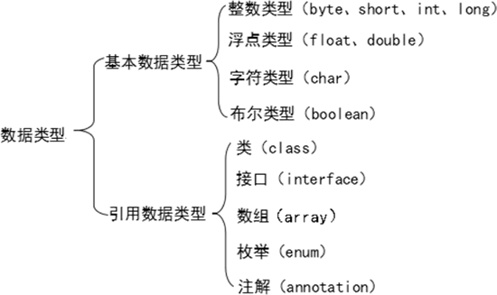
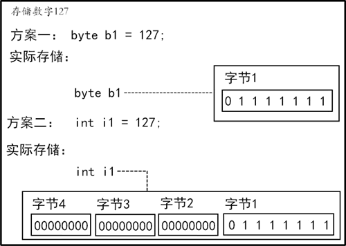

首页 > 编程笔记
Java基本数据类型（整形、浮点型、字符型和布尔型）
Java 是一门强类型的编程语言，所有的变量必须显式声明数据类型。
Java 中定义了多种数据类型，根据数据的特点，数据类型分为两大类：基本数据类型和引用数据类型（简称引用类型）。Java 中数据类型的分类如下图所示。
基本数据类型包括 4 类 8 种，4 类分别是整数类型、浮点类型、字符类型和布尔类型。
例如，一个 byte 型变量代表的值占用 1 字节的内存空间（8 位），能够表示的十进制整数数据的范围为-128~127（包含 0）。一个 int 型变量代表的值占用 4 字节的内存空间（32 位），能够表示的十进制整数数据的范围为 -2147483648~2147483647（包含 0）。一个 int 型变量的值也可以是 -128~127 的任意整数。相对于使用 byte 型变量，int 型变量会额外占用 3 字节的内存空间。
使用不同类型存储数字 127 的区别如下图所示。
在内存资源非常有限或对计算效率要求非常高的应用场景中，根据准备存储的数据的大小，选择占用内存空间最小的数据类型是很有意义的。反之，在资源较为充裕的应用场景中，一般使用 int 型变量来存储整数，仅当需要存储超过 int 型的整数时，才使用 long 型变量。
整数类型如下表所示。
简单来说，在 Java 源代码中直接出现的值均是字面量。例如：
浮点数分为单精度浮点数（float）和双精度浮点数（double）两种，双精度浮点数比单精度浮点数所使用的内存空间更大，可以表示的数值范围与精确度也较大。
这里需要注意的是，Java 中的浮点类型使用 IEEE 754（二进制浮点算术标准）来存储变量的值。因此，虽然 float 型变量和 int 型变量都占用 4 字节的内存空间，但是 float 型变量能表示的整数范围远大于 int 型的。
浮点类型如表 2 所示。
Unicode 编码可以简单地理解为数字到字符的映射，并且为每种语言中的每个字符设定了统一且唯一的二进制编码，以满足跨语言、跨平台进行文本转换和处理的要求。例如，字符 'A' 在 Unicode 编码中对应的十进制形式为 65，对应的二进制形式为 00000000 01000001，对应的十六进制形式为 0041。
在 Java 中，char 型变量的赋值支持两种方式，一是直接使用字符进行赋值，二是使用 Unicode 编码进行赋值。例如，字符'A'也可以用 Unicode 编码 '\u0041' 表示，前缀 u 表示 Unicode 编码。
双字节 Unicode 编码的存储范围为 \u0000～\uFFFF，所以 char 型变量的取值范围为 0~2^16-1（0~65535）。
有些字符（如回车换行符）不能通过键盘输入字符串或程序中，这时就需要使用转义字符常量来表示一些特殊字符，但是要在前面加上反斜杠“\”。常见的转义符如表 3 所示。
【实例】 编写一个应用程序，给出英文字母及汉字在 Unicode 表中的位置。
注意，不可以使用 0 和非 0 的整数来代替 true 和 false，其他基本数据类型的值也不能转换成布尔类型。
例如：
Java 中定义了多种数据类型，根据数据的特点，数据类型分为两大类：基本数据类型和引用数据类型（简称引用类型）。Java 中数据类型的分类如下图所示。

图 1 Java中数据类型的分类
图 1 Java中数据类型的分类
基本数据类型包括 4 类 8 种，4 类分别是整数类型、浮点类型、字符类型和布尔类型。
引用类型是指除基本数据类型以外的所有类型，包括类、接口、数组和枚举等，后续会具体介绍。
整数类型
由图 1 可知，Java 中的整数类型包括 byte、short、int 和 long，这四者之间的区别仅仅是宽度和范围不同。例如，一个 byte 型变量代表的值占用 1 字节的内存空间（8 位），能够表示的十进制整数数据的范围为-128~127（包含 0）。一个 int 型变量代表的值占用 4 字节的内存空间（32 位），能够表示的十进制整数数据的范围为 -2147483648~2147483647（包含 0）。一个 int 型变量的值也可以是 -128~127 的任意整数。相对于使用 byte 型变量，int 型变量会额外占用 3 字节的内存空间。
使用不同类型存储数字 127 的区别如下图所示。

图 2 使用不同类型存储数字127的区别
图 2 使用不同类型存储数字127的区别
在内存资源非常有限或对计算效率要求非常高的应用场景中，根据准备存储的数据的大小，选择占用内存空间最小的数据类型是很有意义的。反之，在资源较为充裕的应用场景中，一般使用 int 型变量来存储整数，仅当需要存储超过 int 型的整数时，才使用 long 型变量。
整数类型如下表所示。
| 整数类型 | 占用的存储空间 | 表数范围 |
|---|---|---|
| byte | 1 字节 | -27~27-1（-128~127） |
| short | 2 字节 | -215~215-1（ -32768~32767） |
| int | 4 字节 | -231~231-1（-2147483648~2147483647） |
| long | 8 字节 | -263~263-1 |
1) 整型数据的定义
在使用整型数据之前必须先声明，在声明时也可以赋初值。例如：byte a = 7; short b = 128; int c = 7;
2) 整数字面量的默认数据类型
在计算机科学中，字面量（literal）是用于表达源代码中一个固定值的表示法（notation）。几乎所有的计算机编程语言都支持对基本值的字面量表示，如整数、浮点数及字符串，很多布尔类型和字符类型的值也支持用字面量表示，还有一些甚至对枚举类型的元素，以及数组、记录和对象等复合类型的值也支持用字面量表示。简单来说，在 Java 源代码中直接出现的值均是字面量。例如：
int c = 7; // 7 是字面量 System.out.println(128); // 128 是字面量在 Java 中，整数类型的字面量默认是 int 型的。例如：
System.out.println(128); // 128 是 int 类型的字面量如果在整数类型的字面量后面显式地添加大写英文字母 L（推荐）或小写英文字母 l，那么该整数字面量的类型为 long。例如：
System.out.println(128L); // 128 是 long 类型的字面量
浮点类型
浮点类型主要用来存储小数，也可以用来存储范围较大的整数。浮点数分为单精度浮点数（float）和双精度浮点数（double）两种，双精度浮点数比单精度浮点数所使用的内存空间更大，可以表示的数值范围与精确度也较大。
这里需要注意的是，Java 中的浮点类型使用 IEEE 754（二进制浮点算术标准）来存储变量的值。因此，虽然 float 型变量和 int 型变量都占用 4 字节的内存空间，但是 float 型变量能表示的整数范围远大于 int 型的。
浮点类型如表 2 所示。
| 浮点类型 | 占用的存储空间 | 表数范围 |
|---|---|---|
| float | 4 字节 | -3.403E38~3.403E38 |
| double | 8 字节 | -1.798E308~L798E308 |
1) 浮点类型的使用
浮点类型需要使用关键字 float 和 double，也可以在声明时赋初值。例如：float a = 7.5F; double b = 123.6D;
2) 浮点数字面量的默认数据类型
在 Java 中，浮点数字面量的默认数据类型是 double。也可以在浮点数字面量的后面显式地添加大写英文字母 D 或小写英文字母 d 来表示该字面量是 double 型的。如果想声明一个 float 型的字面量，那么需要在字面量的后面显式地添加大写英文字母 F 或小写英文字母 f。字符类型
字符类型表示单个字符。Java 中的字符类型的变量使用关键字 char 声明，而字符型字面量必须用单引号引起来。例如：char c = 'A';Java 中的字符采用双字节 Unicode 编码，占 2 字节（16 位），最高位不是符号位，没有负数的 char。
Unicode 编码可以简单地理解为数字到字符的映射，并且为每种语言中的每个字符设定了统一且唯一的二进制编码，以满足跨语言、跨平台进行文本转换和处理的要求。例如，字符 'A' 在 Unicode 编码中对应的十进制形式为 65，对应的二进制形式为 00000000 01000001，对应的十六进制形式为 0041。
在 Java 中，char 型变量的赋值支持两种方式，一是直接使用字符进行赋值，二是使用 Unicode 编码进行赋值。例如，字符'A'也可以用 Unicode 编码 '\u0041' 表示，前缀 u 表示 Unicode 编码。
双字节 Unicode 编码的存储范围为 \u0000～\uFFFF，所以 char 型变量的取值范围为 0~2^16-1（0~65535）。
有些字符（如回车换行符）不能通过键盘输入字符串或程序中，这时就需要使用转义字符常量来表示一些特殊字符，但是要在前面加上反斜杠“\”。常见的转义符如表 3 所示。
| 字符表示 | Unicode 编码 | 说明 |
|---|---|---|
| \n | \u000a | 换行符 |
| \t | \u0009 | 水平制表符 |
| \r | \u000d | 回车符 |
| \b | \u0008 | 退格符（Backspace） |
| \' | \u0027 | 单引号 |
| \" | \u0022 | 双引号 |
| \\ | \u005c | 杠 |
【实例】 编写一个应用程序，给出英文字母及汉字在 Unicode 表中的位置。
public class Example2_l {
public static void main(String[] args) {
System.out.println((int)'A');
System.out.println((int)'B');
System.out.println((int)'我');
System.out.println((int)'你');
System.out.println((int)'他');
}
}
运行结果为：
65
66
25105
20320
20182
布尔类型
在 Java 中声明布尔类型的变量的关键字是 boolean。布尔类型只有两个字面量：true 和 false。布尔类型用来判断逻辑条件，一般用于程序流程控制。注意，不可以使用 0 和非 0 的整数来代替 true 和 false，其他基本数据类型的值也不能转换成布尔类型。
例如：
boolean isBig = true; boolean isSmall = false;如果试图为它们赋 true 和 false 之外的常量，如下所示：
boolean isBig = 1; boolean isSmall = 'a';那么会发生类型不匹配编译错误。
关注公众号「站长严长生」，在手机上阅读所有教程，随时随地都能学习。内含一款搜索神器，免费下载全网书籍和视频。

微信扫码关注公众号